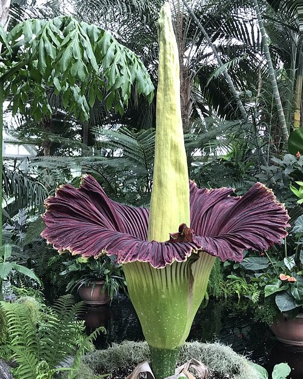
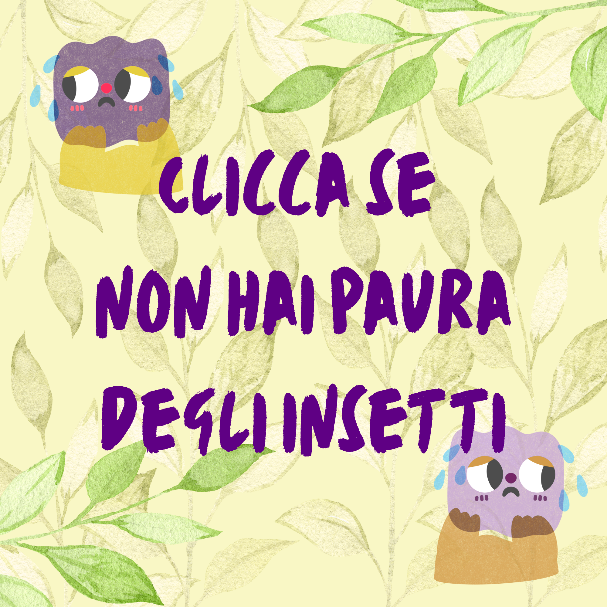

Questo è un fiore che non conviene osservare troppo da vicino, immaginerete perchè dal suo nome.
La particolarità dell'Aro Titano è infatti cercare di assomigliare il più possibile a un cadavere in decomposizione, attirando i suoi impollinatori preferiti: i coleotteri Silphidae! (foto qui vicino)
La pianta emette un odore orribile per l'essere umano, che ricorda i cadaveri in putrescenza, anche la consistenza e il colore del fiore hanno questo scopo. Inoltre il fiore mantiene una temperatura abbastanza elevata sulla sua superficie, per migliorare uleriormente questa illusione.
Insomma, è sicuramente una pianta per stomaci forti.
L'odore particolare però non è l'unica caratteristica peculiare di questo fiore: esso risulta l'infiorescenza non ramificata più grande al mondo!

